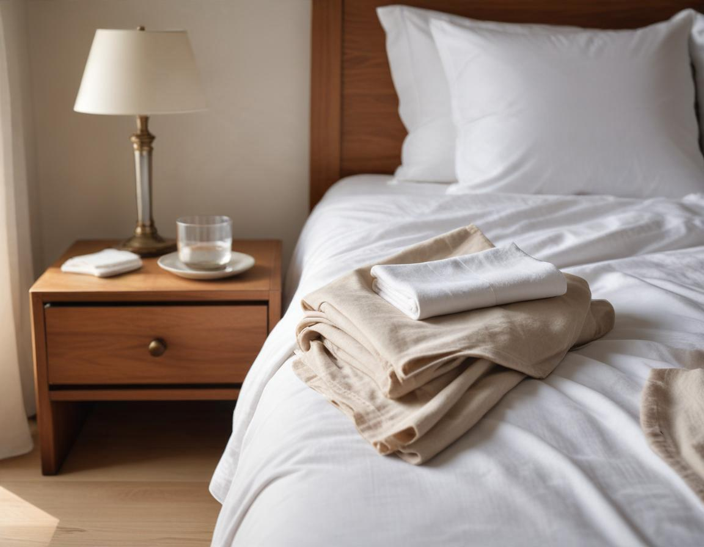

자기 전에, 숨부터 고르세요
잠은 애쓸수록 멀어지기도 합니다. 지금은 잘 자려고 하지 않으셔도 됩니다. 숨만 따라가 보세요.
4초 들이쉬고, 6초 내쉬어 보세요
긴장을 푸는 데 도움이 될 수 있는 일반적인 방법이며 치료를 대신하지 않습니다. 어지럽거나 불편하면 멈추세요.
음성으로 듣기 (약 2분)
AI로 만든 음성입니다. 눈을 감고 들으셔도 좋고, 듣다가 졸리면 그대로 주무셔도 됩니다.
수면욕이란
깨어 있는 시간이 길어질수록 잠을 자고 싶은 욕구가 쌓이고, 몸의 시계가 "지금이 잘 시간"이라고 알려 줍니다. 이 두 가지가 맞아떨어질 때 잠이 옵니다.
낮잠이 길거나 늦은 카페인, 밝은 화면, 들쭉날쭉한 기상 시간은 이 균형을 흩뜨릴 수 있습니다. 그래서 잠만 따로 보지 않고 낮의 생활 전체를 함께 봅니다.
잠은 몸따삶잘의 한가운데에 있습니다.
불면의 네 가지 모양
이렇게 여쭙니다

- 잠의 모양
몇 시에 눕고, 잠들기까지 얼마나 걸리고, 몇 번 깨고, 몇 시에 일어나는지 여쭙니다. - 낮의 생활
카페인, 낮잠, 식사 시간, 활동량, 자기 전 화면을 함께 묻습니다. - 몸따삶잘
몸의 온기, 소화, 대소변, 통증, 평소 생활을 잠과 함께 살핍니다. - 기록하고 이어서 묻기
잠이 달라진 점을 남기고 다음 진료에서 이어서 여쭙니다.
정해진 양식은 없습니다. 눕은 시각, 깬 횟수와 시각, 일어난 시각, 아침의 개운함을 일주일만 메모해 오시면 이야기가 훨씬 구체적이 됩니다.
안전을 위해 지키는 원칙
복용 중인 수면제와 신경안정제는 처방한 의사와 상의해 단계적으로 조절해야 합니다. 한의원에서는 먹는 약을 모두 확인한 뒤 진료합니다.
코를 크게 골고 숨이 멎는 것 같을 때, 낮에 참을 수 없이 졸릴 때, 다리가 불편해 움직여야 잠들 수 있을 때, 우울감이 깊거나 극단적인 생각이 들 때는 먼저 의료기관 진료를 받으세요.
변화의 정도와 기간은 사람마다 다릅니다. 진찰 후 가능한 방법과 비용을 안내해 드립니다.
잠과 식욕은 서로 영향을 줍니다
잠이 부족하면 식욕이 커지는 경향이 있는 것으로 알려져 있고, 늦은 식사와 야식은 잠을 흔들 수 있습니다. 그래서 불면과 대사 문제는 함께 오는 경우가 많습니다.
불면·수면 글
불면·수면걱정이 많아서 잠이 안 올 때는 어떻게 살피나요?
누우면 걱정이 꼬리를 물어 잠이 안 올 때는 걱정이 시작되는 시각과 내용, 낮의 긴장과 몸의 신호를 먼저 묻고 걱정을 적어 두는 방법 같은 생활 요령을 안내하며 우울감이 깊거나 일상이 어려우면 전문 진료를 권합니다.
수정 2026-11-22불면·수면
주말에 몰아서 자면 월요일이 더 힘든 이유는 무엇인가요?
주말에 몰아서 늦게 자고 늦게 일어나면 몸의 시계가 뒤로 밀려 일요일 밤에 잠이 안 오고 월요일 아침이 더 힘들어질 수 있어 평일과 주말의 기상 시간 차이를 줄이고 아침 빛을 쬐는 방법을 안내합니다.
수정 2026-11-22불면·수면
새벽에 자꾸 잠이 깨는 이유는 무엇이고, 어떤 점을 살펴보나요?
새벽에 깨는 이유는 수면 후반의 얕아진 잠, 카페인·음주, 야간 소변, 통증, 열감, 속 불편, 불안, 수면무호흡 등 다양해서 몇 시에 왜 깨는지와 다시 잠드는지를 먼저 묻고 생활 전체와 함께 살핍니다.
수정 2026-11-22불면·수면
꿈이 많고 자도 개운하지 않을 때는 어떤 점을 살펴보나요?
꿈이 많고 자도 개운하지 않다는 호소는 실제 수면 시간, 자주 깨는지, 코골이, 낮의 졸음과 컨디션을 먼저 묻고 소화와 몸의 긴장, 스트레스까지 함께 살핍니다.
수정 2026-11-22불면·수면
자면서 이를 갈거나 아침에 턱이 뻐근할 때는 어떻게 살피나요?
자면서 이를 갈거나 아침에 턱과 관자놀이가 뻐근한 것은 스트레스와 수면의 질, 코골이와 관련될 수 있어 낮의 이 악물기 습관과 긴장, 두통을 묻고 치아 손상이 의심되면 치과 진료를 함께 권합니다.
수정 2026-11-22불면·수면
청소년이 새벽에 자고 아침에 못 일어나는 것은 어떻게 살피나요?
청소년이 밤늦게야 잠들고 아침에 일어나지 못하는 것은 사춘기 수면 리듬의 변화와 화면 사용, 학업 부담이 함께 작용하는 경우가 많아 수면 시간과 화면 시간, 낮의 활동을 먼저 묻고 혼내지 않고 생활 리듬을 조금씩 옮겨 보며 우울감이 깊으면 전문 진료를 권합니다.
수정 2026-11-22불면·수면
코를 크게 골고 자다가 숨이 멎는 것 같을 때는 어떻게 하나요?
큰 코골이와 자다가 숨이 멎는 듯한 모습, 아침 두통과 낮의 심한 졸음은 수면무호흡 가능성이 있어 수면 검사를 먼저 권하며 한의원에서는 생활과 체중, 코막힘 같은 요인을 함께 살피고 검사 결과를 약속하지 않습니다.
수정 2026-11-22불면·수면
낮에는 졸린데 밤에는 잠이 안 올 때는 어떻게 살피나요?
낮에는 졸리고 밤에는 잠이 안 오는 패턴은 수면 리듬이 뒤로 밀렸거나 낮잠이 길거나 밤잠이 얕은 경우가 있어 하루의 졸음 시간표와 낮잠, 카페인, 기상 시간을 기록해 살피며 극심한 졸음이나 숨 멎음이 의심되면 병원 진료를 권합니다.
수정 2026-11-22불면·수면
잠들기까지 한 시간 넘게 걸릴 때 한의원에서는 무엇을 먼저 묻나요?
누워도 잠이 오지 않는 입면 어려움은 잠자리에 드는 시각과 낮의 카페인, 자기 전 화면, 걱정과 몸의 긴장을 먼저 묻고 생활 리듬과 함께 살피며 우울감이나 수면무호흡이 의심되면 병원 진료를 권합니다.
수정 2026-11-22불면·수면
야간 교대근무로 잠이 흐트러질 때 무엇을 먼저 정리하나요?
교대근무로 잠과 식사 시간이 불규칙할 때는 근무 형태와 잠자는 시각, 식사 시간, 카페인 사용을 먼저 정리하고 가능한 범위에서 생활 리듬을 조정하며 낮의 졸음이 심하면 병원 진료를 권합니다.
수정 2026-11-22불면·수면
다리가 불편해서 움직여야 잠들 수 있을 때는 어떻게 하나요?
저녁이나 밤에 다리가 근질거리고 불편해 움직여야 나아지는 하지불안 증상은 잠을 방해하며 빈혈과 철 결핍, 임신, 복용 약과도 관련될 수 있어 병원 검사를 권하고 한의원에서는 생활 습관과 몸의 긴장을 함께 살핍니다.
수정 2026-11-22불면·수면
수면제를 줄이고 싶을 때 무엇을 먼저 알아야 하나요?
수면제를 줄이고 싶을 때는 임의로 끊지 말고 처방한 의사와 상의해 단계적으로 조절해야 하며 한의원에서는 복용 약을 모두 확인한 뒤 잠과 생활 리듬을 함께 살핍니다.
수정 2026-11-22불면·수면
잠들기 전에 가볍게 몸을 풀면 어떤 점이 도움이 되나요?
잠들기 전 목과 어깨, 허리, 발을 천천히 풀고 따뜻하게 하면 긴장이 줄어 잠자리에 드는 데 도움이 될 수 있어 무리하지 않는 동작과 시간을 안내하며 통증이 있으면 먼저 통증 부위를 살핍니다.
수정 2026-11-22불면·수면
출산 뒤 아기 때문에 잠을 못 잘 때는 어떻게 지내면 좋을까요?
출산 뒤 수유와 밤중 돌봄으로 잠이 쪼개질 때는 아기가 잘 때 같이 눕고 가족과 돌봄을 나누며 낮 활동을 챙기는 방법이 도움이 될 수 있고 우울감이 깊거나 잠잘 수 있는데도 못 자면 산부인과나 정신건강 진료를 권합니다.
수정 2026-11-22불면·수면
자기 전 휴대폰을 보면 정말 잠에 방해가 되나요?
자기 전 밝은 화면과 자극적인 영상은 잠들기까지의 시간을 늘리고 잠을 얕게 할 수 있어 화면을 줄이는 시간과 대체 활동, 야간 모드 사용 같은 현실적인 방법을 안내하며 완벽하게 끊지 않아도 된다고 안내합니다.
수정 2026-11-22불면·수면
통증 때문에 밤에 잠을 설칠 때는 어떤 점을 먼저 살펴보나요?
어깨와 허리, 무릎 통증으로 밤에 뒤척이고 깰 때는 어느 자세에서 아픈지와 베개, 침구를 먼저 묻고 통증 부위를 살피며 잠자는 자세를 조정하고 밤새 심한 통증은 병원 진료를 권합니다.
수정 2026-11-22불면·수면
나이가 들면서 일찍 깨고 낮잠이 늘 때는 어떤 점을 살펴보나요?
나이가 들면 잠이 얕아지고 일찍 깨며 낮잠이 늘기 쉬워 수면 리듬이 달라지는 경우가 많으므로 낮의 활동과 햇빛, 낮잠 시간, 복용 약과 통증, 야간 소변을 함께 살피고 수면제는 임의로 중단하지 않습니다.
수정 2026-11-22불면·수면
악몽을 자주 꾸거나 가위에 눌릴 때는 어떤 점을 살펴보나요?
악몽이 잦거나 자다가 깨서 몸이 움직이지 않는 가위눌림은 스트레스와 수면 부족, 불규칙한 수면과 관련될 수 있어 빈도와 상황을 묻고 수면을 규칙적으로 하며 외상 경험이 있거나 낮의 생활이 힘들면 전문 진료를 권합니다.
수정 2026-11-22불면·수면
자다가 소변 때문에 깨면 잠과 어떤 관련이 있고, 무엇을 살펴보나요?
밤에 소변 때문에 자주 깨는 것은 저녁 수분·카페인·음주, 수면무호흡, 당뇨, 전립선, 방광, 복용 약 등 여러 원인이 있어 횟수와 소변량, 갈증을 먼저 묻고 필요하면 병원 검사를 권합니다.
수정 2026-11-22불면·수면
낮잠을 자면 밤잠이 더 나빠지나요? 낮잠과 밤잠의 관계
낮잠은 짧고 이른 오후에 자면 도움이 될 수 있지만 길거나 늦은 시간이면 밤잠을 방해할 수 있어 낮잠의 길이와 시간대, 밤잠의 상태를 함께 묻고 생활 리듬을 조정합니다.
수정 2026-11-22불면·수면
갱년기에 열감과 식은땀 때문에 잠이 깰 때는 어떤 점을 살펴보나요?
갱년기 즈음 밤에 열이 올라 깨고 식은땀이 나는 경우는 월경 변화, 열감이 오는 시간, 침실 온도와 음주·카페인을 먼저 묻고 필요하면 산부인과 진료도 함께 안내합니다.
수정 2026-11-22불면·수면
잠을 못 자서 기분이 가라앉을 때는 어떻게 살펴야 하나요?
잠을 못 자면 기분이 가라앉고 짜증이 늘며 의욕이 줄 수 있고 반대로 우울감이 잠을 방해하기도 해 서로 영향을 주므로 잠과 기분의 변화를 함께 묻고 우울감이 깊거나 극단적인 생각이 들면 즉시 전문 진료를 권합니다.
수정 2026-11-22불면·수면
해외여행 뒤 시차 때문에 잠이 흐트러질 때는 어떻게 하나요?
시차로 낮에 졸리고 밤에 잠이 안 올 때는 도착지의 시간에 맞춰 아침 햇빛을 쬐고 식사 시간을 맞추며 낮잠은 짧게 하고 카페인과 음주를 줄이는 방법이 도움이 될 수 있어 며칠 안에 적응하도록 천천히 조정합니다.
수정 2026-11-22불면·수면
잠이 잘 오지 않을 때 한의원에서는 무엇을 먼저 살피나요?
불면은 잠드는 시간, 자주 깨는 정도, 새벽 각성, 낮의 컨디션을 일상의 말로 먼저 묻고, 식사·소화·몸의 온기 등 생활 전체의 리듬 속에서 살핍니다.
수정 2026-11-22불면·수면
수면 일기는 어떻게 쓰면 진료에 도움이 되나요?
일주일 동안 눕은 시각, 잠들기까지 걸린 시간, 깬 횟수와 시각, 일어난 시각, 아침의 개운함, 낮의 졸음과 카페인을 간단히 적어 오면 불면의 모양을 이해하고 변화를 이어서 확인하는 데 큰 도움이 됩니다.
수정 2026-11-22불면·수면
수면제에 기대기 전에 생활에서 먼저 해 볼 수 있는 것은 무엇인가요?
수면제를 시작하기 전에 일정한 기상 시간, 낮 활동, 카페인과 음주 조절, 침실 환경, 잠자리 습관 같은 생활 방법을 먼저 점검해 볼 수 있으며 이미 복용 중인 약은 임의로 끊지 않고 처방한 의사와 상의해야 합니다.
수정 2026-11-22불면·수면
시험 기간에 잠이 줄고 불안할 때는 어떻게 지내면 좋을까요?
시험 기간에 잠을 줄이면 집중과 기억에 불리할 수 있어 일정한 취침과 기상 시간을 지키고 카페인을 줄이며 시험 전날 잠이 안 와도 크게 걱정하지 않는 방법을 안내하고 불안이 심하면 전문 진료를 권합니다.
수정 2026-11-22불면·수면
저녁 식사와 술은 잠에 어떤 영향을 주나요?
잠들기 직전의 과식과 야식, 음주는 잠이 얕아지고 새벽에 깨는 것과 관련될 수 있어 식사 시각과 양, 술의 양을 먼저 묻고 잠들기 몇 시간 전에 가볍게 마무리하는 방법을 안내하며 식욕과 잠의 리듬을 함께 살핍니다.
수정 2026-11-22불면·수면
카페인은 몇 시까지 마셔도 잠에 지장이 없을까요?
카페인은 몸에 오래 남아 늦은 오후의 커피도 밤잠을 방해할 수 있고 민감도에 따라 다르므로 하루 마시는 양과 마지막 시각을 기록해 점검하며 커피 외에 차와 에너지 음료, 초콜릿에도 들어 있다는 점을 안내합니다.
수정 2026-11-22불면·수면
오늘 밤은 잘 자려고 하지 않으셔도 됩니다 (자기 전에 읽는 글)
잠은 애쓸수록 멀어질 수 있어 오늘 밤은 잘 자려는 마음을 내려놓고 숨을 따라가며 몸의 긴장을 풀어 보는 짧은 글이며 치료를 대신하지 않고 우울감이 깊거나 일상이 어려우면 전문 진료를 권합니다.
수정 2026-11-22불면·수면
침실 온도와 빛, 소음은 잠에 어떤 영향을 주나요?
침실이 너무 덥거나 밝거나 시끄러우면 잠이 얕아지고 자주 깰 수 있어 온도와 빛, 소음, 침구와 베개를 점검하고 작은 것부터 바꿔 보는 방법을 안내합니다.
수정 2026-11-22불면·수면
오랜 불면 뒤 침대에 누우면 오히려 긴장될 때는 어떻게 하나요?
오래 잠을 못 자다 보면 침대만 보아도 긴장되는 습관이 생길 수 있어 졸릴 때만 눕고 잠이 안 오면 일어나며 침대를 잠 외의 용도로 쓰지 않는 방법을 안내하고 걱정이 크면 전문 진료를 함께 권합니다.
수정 2026-11-22불면·수면
새벽 3시에 깼을 때는 지금 무엇을 하면 되나요?
새벽 3시에 깨서 잠이 안 올 때는 시계를 확인하지 않고 숨을 고르며 20분이 넘으면 조용한 불빛 아래서 잠시 쉬었다가 졸릴 때 다시 눕는 방법이 도움이 될 수 있고 반복되면 깨는 이유를 기록해 진료에서 함께 살핍니다.
수정 2026-11-22
자주 묻는 질문
불면은 한의원에서 어떻게 살피나요?
잠드는 시간, 자주 깨는 정도, 새벽 각성, 낮의 컨디션을 먼저 묻고, 소화·대소변·몸의 온기·통증 같은 생활 전체의 리듬 속에서 함께 살핍니다.
수면제를 먹고 있는데 진료받을 수 있나요?
네, 복용 중인 약을 모두 알려 주세요. 약은 임의로 중단하거나 줄이지 마시고 처방한 의사와 상의해야 합니다.
수면욕이 무엇인가요?
깨어 있는 시간이 길어질수록 잠을 자고 싶은 욕구가 쌓이고, 몸의 시계가 잠들 시간을 알려 주는 것을 말합니다. 낮잠, 카페인, 밝은 화면, 불규칙한 기상 시간은 이 균형을 흩뜨릴 수 있습니다.
어떤 경우에 병원을 먼저 가야 하나요?
코골이와 호흡 멎음이 의심되거나, 낮에 참을 수 없이 졸리거나, 우울감이 깊거나 극단적인 생각이 들 때는 먼저 의료기관에서 진료받으시기를 권합니다.
예약·오시는 길
주소
진료시간
진료시간은 공개된 안내 기준입니다. 방문 전 전화로 확인해 주세요.